Cấp 1 trơn, cấp 2 khăn đỏ, cấp 3 huy chương, cấp 4 vương miện. Cột cuối: linh vật trong kho nông sản.
| Cấp 1 | Cấp 2 | Cấp 3 | Cấp 4 | Kho | |
|---|---|---|---|---|---|
| Cải Xanh |  | ||||
| Dưa Leo |  |  |  |  | |
| Bí Đỏ |  |  | |||
| Khoai Tây |  | ||||
| Cải Bắp | |||||
| Hành Tím |  |  |  |  |  |
| Lúa Nước | |||||
| Đậu Đậu |  |